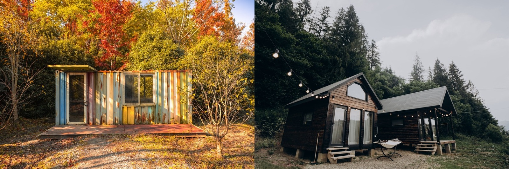

Shipping Container vs Tiny Home
Two paths to a small, affordable dwelling — a steel box conversion or a purpose-built tiny house. One is tougher and more modular; the other is more comfortable and flexible to design.

If you want a small, affordable dwelling — a casita, a rental, a first build on your land — two routes dominate: convert a shipping container, or build a purpose-built tiny home. The container is tougher and stackable; the tiny home is more comfortable and freer to design. In the tropics, comfort and heat are the deciding factors.
The quick verdict
For a comfortable small home in the tropics, a purpose-built tiny home usually wins — it's designed for livability and easy to cool. A container is tougher, modular, and industrial-cool, but its steel shell needs serious insulation to be comfortable in tropical heat, which narrows the cost gap.The head-to-head
| Factor | Shipping container | Tiny home (purpose-built) |
|---|---|---|
| Starting point | Repurposed steel box | Built to be a home |
| Cost (finished) | 🟡 ~$1,500–3,000/m² | 🟡 ~$1,000–2,500/m² |
| Heat / climate fit | 🔴 Steel bakes without insulation | 🟢 Easy to cool & cross-ventilate |
| Durability | 🟢 Very strong, stackable | 🟡 As durable as the build method |
| Design freedom | 🟡 Constrained by box size | 🟢 Any shape/layout |
| Moisture / rust | 🔴 Steel rusts in humidity/salt | 🟢 No steel shell to rust |
| Modularity | 🟢 Stack & combine boxes | 🟡 Harder to expand |
How they actually differ
A container gives you an incredibly strong, stackable, modular steel shell — great if you love the industrial look or want to combine units — but that steel is the problem in the tropics: it's an oven without heavy insulation and it rusts in humid, salty air. A purpose-built tiny home starts from comfort: it can be any shape, cross-ventilated, shaded, and built in whatever method suits the site (including cool, termite-proof concrete). Costs end up close once a container is properly finished for the heat.
…in the tropics specifically
Both make good casitas or first builds on tropical land, but the climate tilts toward the tiny home for everyday comfort — it's simply easier to keep cool and free of rust worries. A container home works beautifully here when it's done right (ventilated over-roof, real insulation, corrosion protection) and the modern-industrial look is what you want. For a small permanent dwelling most people will actually live in, a well-designed tiny home is the more forgiving choice.
Not sure which is right for your build?
SORA is a fixed-price design-build platform for foreign buyers in Panama and Costa Rica. We spec the material and method that actually fit your site, climate, and budget — and tell you straight when the cheaper option is the smarter one.
See real 2026 build costs →Frequently asked questions
Is a container home or tiny home cheaper?
They end up close once finished. A container shell is cheap but insulating, cladding, and cooling it for the tropics adds up; a purpose-built tiny home costs a bit less per square metre and is designed for comfort from the start. Neither is dramatically cheaper than the other once livable.
Which is better in a hot climate, a container or tiny home?
A purpose-built tiny home is generally easier to keep cool — it can be shaped, ventilated, shaded, and built in cooler materials. A container's steel shell absorbs heat aggressively and needs substantial insulation and ventilation to be comfortable in the tropics.
Can a shipping container home be a good casita in Panama or Costa Rica?
Yes, if done right — with a ventilated over-roof, proper insulation, and corrosion protection against humidity and salt. Done cheaply it's hot and rust-prone. For a small dwelling you'll live in daily, a well-designed tiny home is often the more forgiving option.
Sources & verification
Figures in this guide were checked against primary and authoritative sources on 27 July 2026. Immigration, tax, and cost figures change — always confirm the current rules with the official body or a licensed professional before acting.